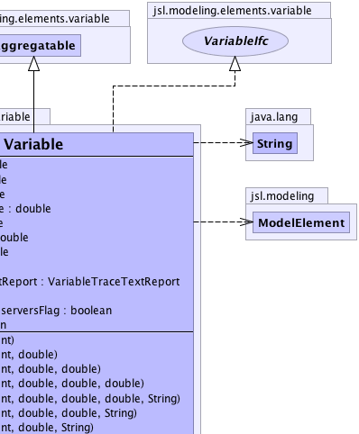
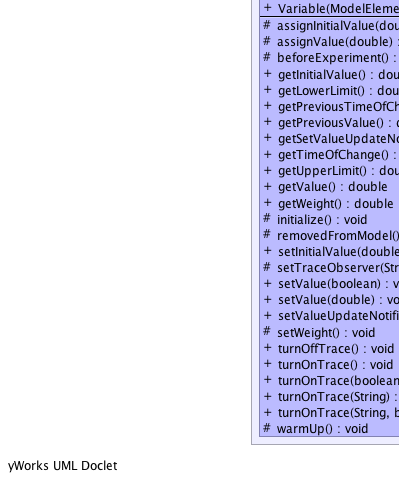
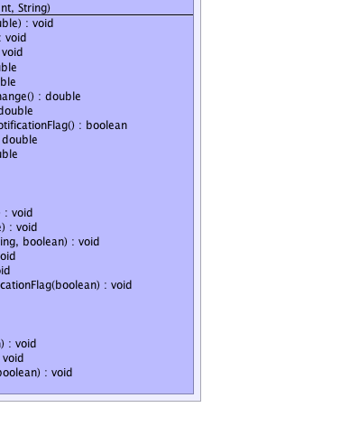

jsl.modeling.ModelElement
jsl.modeling.elements.variable.Aggregatable
jsl.modeling.elements.variable.Variable
jsl.modeling.ModelElement
jsl.modeling.elements.variable.Aggregatable
jsl.modeling.elements.variable.Variable
|
||||||||||
| PREV CLASS NEXT CLASS | FRAMES NO FRAMES | |||||||||
| SUMMARY: NESTED | FIELD | CONSTR | METHOD | DETAIL: FIELD | CONSTR | METHOD | |||||||||
java.lang.Object
public class Variable
 |
 |
|  |  |
| Nested Class Summary |
|---|
| Nested classes/interfaces inherited from class jsl.modeling.ModelElement |
|---|
ModelElement.TimedUpdateEventAction, ModelElement.WarmUpEventAction |
| Field Summary | |
|---|---|
protected double |
myInitialValue
Holds the initial value of the variable. |
protected double |
myLowerLimit
Represents the lowest possible value allowed for this variable Attempts to set the value of the variable to < myLowerLimit will throw an exception |
protected double |
myNextValue
The next value of the variable. |
protected double |
myPrevTimeOfChange
The previous time that the variable changed |
protected double |
myPrevValue
The previous value of the variable. |
private boolean |
mySetValueUpdateObserversFlag
Indicates whether the variable will notify update observers when its value changes. |
protected double |
myTimeOfChange
The time that the variable changed |
private boolean |
myTraceFlag
Indicates whether or not text file tracing is on/off |
protected double |
myUpperLimit
Represents the lowest possible value allowed for this variable Attempts to set the value of the variable to > myUpperLimit will throw an exception |
protected double |
myValue
The value of the variable. |
protected VariableTraceTextReport |
myVariableTraceTextReport
Holds a reference to an observer that will trace the variable's changes |
protected double |
myWeight
The weight associated with the change |
| Fields inherited from class jsl.modeling.elements.variable.Aggregatable |
|---|
myAggregates |
| Constructor Summary | |
|---|---|
Variable(ModelElement parent)
Creates a Variable with the given parent with initial value 0.0 over the range [Double.NEGATIVE_INFINITY, Double.POSITIVE_INFINITY] |
|
Variable(ModelElement parent,
double initialValue)
Creates a Variable with the given name and initial value over the range [Double.NEGATIVE_INFINITY, Double.POSITIVE_INFINITY] |
|
Variable(ModelElement parent,
double initialValue,
double lowerLimit)
Creates a Variable with the initial value over the supplied range [lowerLimit, Double.POSITIVE_INFINITY] |
|
Variable(ModelElement parent,
double initialValue,
double lowerLimit,
double upperLimit)
Creates a Variable with the initial value over the supplied range [lowerLimit, upperLimit] |
|
Variable(ModelElement parent,
double initialValue,
double lowerLimit,
double upperLimit,
java.lang.String name)
Creates a Variable with the given name and initial value over the supplied range [lowerLimit, upperLimit] |
|
Variable(ModelElement parent,
double initialValue,
double lowerLimit,
java.lang.String name)
Creates a Variable with the given name and initial value over the supplied range [lowerLimit, Double.POSITIVE_INFINITY] |
|
Variable(ModelElement parent,
double initialValue,
java.lang.String name)
Creates a Variable with the given name and initial value over the supplied range The default range is [Double.NEGATIVE_INFINITY, Double.POSITIVE_INFINITY] |
|
Variable(ModelElement parent,
java.lang.String name)
Creates a Variable with the given name and initial value, 0.0, over the range [Double.NEGATIVE_INFINITY, Double.POSITIVE_INFINITY] |
|
| Method Summary | |
|---|---|
protected void |
assignInitialValue(double value)
Assigns the value of the variable to the supplied value. |
protected void |
assignValue(double value)
Properly assigns the value of the variable and remembers previous value without notifying any update observers |
protected void |
beforeExperiment()
This method should be overridden by subclasses that need logic to be performed prior to an experiment. |
double |
getInitialValue()
Gets the initial value of the variable |
double |
getLowerLimit()
The lower limit for the range of this random variable |
double |
getPreviousTimeOfChange()
Gets the time associated with previous variable change. |
double |
getPreviousValue()
Gets the previous number value that was assigned before the current value |
boolean |
getSetValueUpdateNotificationFlag()
Gets the value of the flag that indicates whether or not observers will be notified when the value changes. |
double |
getTimeOfChange()
Gets the time associated with the last value observed. |
double |
getUpperLimit()
The upper limit for the range of this random variable |
double |
getValue()
Every Variable must implement the getValue method. |
double |
getWeight()
Gets the weight associated with the last value observed. |
protected void |
initialize()
This method should be overridden by subclasses that need actions performed to initialize prior to a replication. |
protected void |
removedFromModel()
This method should be overridden by subclasses that need actions performed when a model element is removed from a model after the replication has started. |
void |
setInitialValue(double value)
Sets the initial value of the variable. |
protected void |
setTraceObserver(java.lang.String name,
boolean header)
Can be overridden by subclasses to set the protected variable myVariableTraceTextReport for appropriate text tracing |
void |
setValue(boolean value)
Maps true to 1.0 and false to 0.0 |
void |
setValue(double value)
Sets the value of the variable and notifies any observers of the change |
void |
setValueUpdateNotificationFlag(boolean flag)
Turns off or on the notification of update observers for changes to the value of the variable. |
protected void |
setWeight()
Sets the weight |
void |
turnOffTrace()
Turns off the automatic tracing of this variable to a text file. |
void |
turnOnTrace()
Turns on the automatic tracing of this variable to a text file with the default name and no header |
void |
turnOnTrace(boolean header)
Turns on the automatic tracing of this variable to a text file |
void |
turnOnTrace(java.lang.String fileName)
Turns on the automatic tracing of this variable to a text file |
void |
turnOnTrace(java.lang.String name,
boolean header)
Turns on the automatic tracing of this variable to a text file |
protected void |
warmUp()
This method should be overridden by subclasses that need actions performed at the warm up event during each replication. |
| Methods inherited from class jsl.modeling.elements.variable.Aggregatable |
|---|
attachAggregate, detachAggregate, initialize_, notifyAggregatesOfInitialization, notifyAggregatesOfModelRemoval, notifyAggregatesOfValueChange, notifyAggregatesOfWarmUp, warmUp_ |
| Methods inherited from class java.lang.Object |
|---|
clone, equals, finalize, getClass, hashCode, notify, notifyAll, wait, wait, wait |
| Field Detail |
|---|
protected double myLowerLimit
protected double myUpperLimit
protected double myValue
protected double myInitialValue
protected double myPrevValue
protected double myNextValue
protected double myTimeOfChange
protected double myPrevTimeOfChange
protected double myWeight
protected VariableTraceTextReport myVariableTraceTextReport
private boolean myTraceFlag
private boolean mySetValueUpdateObserversFlag
| Constructor Detail |
|---|
public Variable(ModelElement parent)
parent - the variable's parent model element.
public Variable(ModelElement parent,
double initialValue)
parent - the variable's parent model element.initialValue - The initial value of the variable.
public Variable(ModelElement parent,
java.lang.String name)
parent - the variable's parent model element.name - The name of the variable.
public Variable(ModelElement parent,
double initialValue,
java.lang.String name)
parent - the variable's parent model elementinitialValue - The initial value of the variable.name - The name of the variable.
public Variable(ModelElement parent,
double initialValue,
double lowerLimit,
java.lang.String name)
parent - the variable's parent model elementinitialValue - The initial value of the variable.lowerLimit - the lower limit on the range for the variable, must be
< upperLimitname - The name of the variable.
public Variable(ModelElement parent,
double initialValue,
double lowerLimit)
parent - the variable's parent model elementinitialValue - The initial value of the variable.lowerLimit - the lower limit on the range for the variable, must be
< upperLimit
public Variable(ModelElement parent,
double initialValue,
double lowerLimit,
double upperLimit)
parent - the variable's parent model elementinitialValue - The initial value of the variable.lowerLimit - the lower limit on the range for the variable, must be
< upperLimitupperLimit - the upper limit on the range for the variable
public Variable(ModelElement parent,
double initialValue,
double lowerLimit,
double upperLimit,
java.lang.String name)
parent - the variable's parent model elementinitialValue - The initial value of the variable. Must be within the
range.lowerLimit - the lower limit on the range for the variable, must be
< upperLimitupperLimit - the upper limit on the range for the variablename - The name of the variable.| Method Detail |
|---|
public final double getInitialValue()
getInitialValue in interface GetInitialValueIfcpublic final void setInitialValue(double value)
setInitialValue in interface SetInitialValueIfcvalue - The initial value for the variable.public final double getLowerLimit()
public final double getUpperLimit()
public final void setValue(boolean value)
value - public void setValue(double value)
setValue in interface SetValueIfcvalue - The observation of the variable.public double getValue()
getValue in interface GetValueIfcpublic final double getPreviousValue()
getPreviousValue in interface PreviousValueIfcpublic final double getWeight()
getWeight in interface GetWeightIfcprotected void setWeight()
public final double getTimeOfChange()
getTimeOfChange in interface GetTimeOfChangeIfcpublic final double getPreviousTimeOfChange()
getPreviousTimeOfChange in interface GetPreviousTimeOfChangeIfcpublic final void turnOnTrace()
public final void turnOnTrace(boolean header)
header - if true a header will be the first line of the filepublic final void turnOnTrace(java.lang.String fileName)
fileName -
public final void turnOnTrace(java.lang.String name,
boolean header)
name - Used to name the text fileheader - if true a header will be the first line of the filepublic final void turnOffTrace()
protected void assignInitialValue(double value)
value - protected final void assignValue(double value)
value -
protected void setTraceObserver(java.lang.String name,
boolean header)
name - header - protected void beforeExperiment()
ModelElement
beforeExperiment in class ModelElementprotected void initialize()
ModelElement
initialize in class ModelElementprotected void warmUp()
ModelElement
warmUp in class ModelElementprotected void removedFromModel()
Aggregatable
removedFromModel in class Aggregatablepublic final boolean getSetValueUpdateNotificationFlag()
public final void setValueUpdateNotificationFlag(boolean flag)
flag -
|
||||||||||
| PREV CLASS NEXT CLASS | FRAMES NO FRAMES | |||||||||
| SUMMARY: NESTED | FIELD | CONSTR | METHOD | DETAIL: FIELD | CONSTR | METHOD | |||||||||